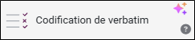
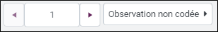

Codification du verbatim
L'environnement d'analyse permet de lire les verbatim pour les coder selon une grille thématique construite par vos soins. "le codebook". il s'agit d'une description objective et systématique du texte en codant chaque observation ou phrase à partir de thèmes définis.
Pour ce faire :
-
Cliquez sur le bouton
 .
. -
Sélectionnez Analyse textuelle & sémantique.
-
Cliquez sur Codification du verbatim.

-
Sélectionnez la variable textuelle à analyser depuis le menu déroulant prévu à cet effet.
-
Sélectionnez le mode de découpage :
-
Par phrase : La codification par phrase consiste à attribuer un ou plusieurs thèmes à chaque phrase d'une observation. Cette méthode permettra par la suite de croiser la codification avec l'orientation (positive, négative, neutre) des verbatim.
-
Par observation : La codification par observation consiste à attribuer un ou plusieurs thèmes à l'ensemble d'un verbatim, sans distinction entre les phrases. En choisissant ce type d’analyse, le croisement avec l’orientation des verbatim se fait à l’échelle du verbatim.
ATTENTION : Vous pouvez convertir une codification par observation en codification par phrase à tout moment.
Lors de cette conversion, l’analyse est appliquée à l’échelle de la phrase. Les résultats de la codification existante sont reportés sur la première phrase de chaque observation.
Si une observation contient plusieurs phrases, les autres phrases peuvent être codifiées manuellement ou via la fonctionnalité IA Coder toutes les observations non traitées.
Une fois la codification en mode par phrase, le retour au mode par observation n’est plus disponible.
-
-
Créez des catégories (variable de codification) pour enrichir le codebook en cliquant sur le bouton .
REMARQUE : Vous pouvez également générer un codebook à l’aide de l’IA via la fonctionnalité Créer un codebook par IA.
-
Créez les thèmes qui correspondent à chaque catégorie en cliquant sur Ajouter un thème.
-
Procédez à la codification des observations ou des phrases du corpus en cochant les thèmes correspondants.
REMARQUE : Vous pouvez également coder les observations à l’aide de l’IA via la fonctionnalité Coder les verbatim IA.
Le bouton Observation non codée permet d'accéder directement à la prochaine observation non codée.

Vous pouvez choisir d'afficher uniquement les observations qui correspondent à un certain profil. Pour ce faire :
-
Cliquez sur le bouton
 .
. -
Définissez le profil en sélectionnant la/les variables et les modalités à utiliser.
EXEMPLE : Nous souhaitons uniquement codifier les réponses saisies par des femmes.
-
-
(Facultatif) Cliquez sur le bouton afin de sélectionner des variables à afficher sous la forme de signature pour chaque observation.
-
(Facultatif) Cochez l'option Afficher les extraits afin de pouvoir insérer des extraits lors de votre codification.
Si vous en avez rajouté, il vous sera possible de les affecter dans un tableau, pour ce faire :
-
Glissez-déposez votre variable texte sur la vue.
-
Depuis l'onglet Options, partie Calcul, sélectionnez Afficher les extraits caractéristiques en utilisant le menu déroulant prévu à cet effet.
-


Gérer les catégories (variables de codification)
-
Cliquez sur le bouton
 pour supprimer une catégorie et les thèmes associés. Un message de confirmation apparaîtra, cliquez sur Oui pour confirmer la suppression.
pour supprimer une catégorie et les thèmes associés. Un message de confirmation apparaîtra, cliquez sur Oui pour confirmer la suppression.

-
Cliquez sur le bouton pour éditer une catégorie et les thèmes associés :
Vous pouvez modifier le nom de la catégorie, ajouter, renommer et supprimer les thèmes.

Exporter / Importer un codebook
Exporter un codebook
Le codebook peut être exporté afin de l'utiliser dans une autre enquête par exemple. Pour ce faire :
-
Accédez à la codification en cliquant sur Paramétrer la codification.
-
Cliquez sur le bouton Exporter.
Le fichier généré est au format .cbk, vous pouvez l'éditer en passant par le bloc-notes.
Le codebook est présenté de la manière suivante :
Copier[Nom de la catégorie 1]
Thème 1
Thème 2
[Nom de la catégorie 2]
Thème 1
Thème 2

Importer un codebook
Pour importer un codebook, procédez comme suit :
-
Accédez à la codification en cliquant sur Paramétrer la codification.
-
Cliquez sur le bouton Importer.
-
Sélectionnez le fichier à importer.
Types de fichiers acceptés : *.txt, *.text et *.cbk.
-
Cliquez sur Charger.
ATTENTION : Si vous avez déjà commencé à paramétrer un codebook, ce dernier sera remplacé par le codebook importé.